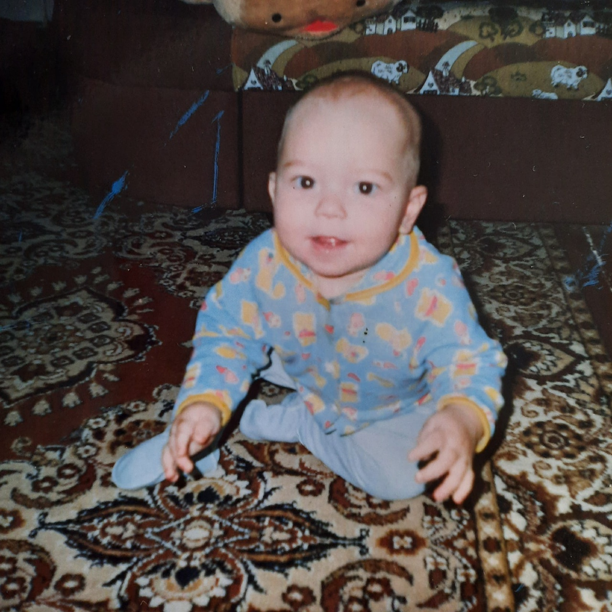

Мое детство прошло в мкр. Лянгасово. У меня было счастливое детство, меня окружали хорошие люди и забота родителей.
В садике я встретил верных друзей, с которыми в будущем мы оказались в одном классе, но сейчас, к сожалению, не поддерживаем связь.
В детстве, как и сейчас, я любил гулять.
